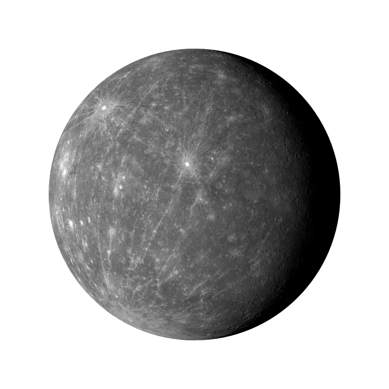

История Солнечной системы
Как возникла Солнечная система?
 Жизнь зародилась на Земле около 3,8 млрд лет назад. До этого события и даже во время становления жизни шли процессы образования нашей планеты и превращения ее в подходящее и уютное для эволюции место. Но как же образовалась наша планета и вся планетная система около Солнца? Что послужило причиной формирования звезды и 8 "шариков" вокруг нее? В этой статье я расскажу вам о существующих гипотезах и теориях возникновения Солнечной системы.
Жизнь зародилась на Земле около 3,8 млрд лет назад. До этого события и даже во время становления жизни шли процессы образования нашей планеты и превращения ее в подходящее и уютное для эволюции место. Но как же образовалась наша планета и вся планетная система около Солнца? Что послужило причиной формирования звезды и 8 "шариков" вокруг нее? В этой статье я расскажу вам о существующих гипотезах и теориях возникновения Солнечной системы.
Перед началом небольшая вводная: изучением происхождения и развития небесных объектов занимается раздел астрономии, который называется космогония.
Гипотеза Лапласа
Данная гипотеза также носит название "небулярная" (лат. "nebula" - туман) Впервые она была озвучена в XVIII веке Иммануилом Кантом , Эммануилом Сведенборгом и Пьером-Симоном Лапласом. Со временем эта гипотеза подверглась доработке с участием таких наук, как астрономия, физика, геология и планетология. Когда начались космические наблюдения, гипотеза подверглась тщательной проверке и улучшениям с целью объяснить новые данные и наблюдения.
Этапы гипотезы:
● Около 4,5 млрд лет назад начался гравитационный коллапс части огромного газопылевого облака. Причиной его начала послужило уплотнение вещества газопылевого облака (возможными причинами чего могли стать как естественная динамика облака, так и прохождение сквозь вещество облака ударной волны от взрыва сверхновой). Помимо водорода и гелия, облако уже содержало в своем составе некоторые металлы;
● В дальнейшем размеры облака уменьшались, оно сжималось все сильнее, и скорость его вращения увеличивалась, что привело к уплощению и формированию характерного диска;
● При возрастании плотности росла и температура, особенно в центре диска. Это привело к началу светимости и образованию протозвезды. Более далекие же от центра области охлаждались, и под действием гравитационных взаимодействий начали отслаиваться от диска, формируя протопланеты;
● В конце концов, температура протозвезды достигла миллионов кельвинов, и начались реакции термоядерного синтеза, что привело к появлению настоящей звезды. Протопланеты, окончательно остыв, превратились в планеты и начали крутиться примерно в одной плоскости со звездой.

Естественные спутники планет могли образоваться из самих протопланетных дисков, либо в результате столкновения планет с пролетающим крупным объектом ( в случае Луны), или же просто вследствие гравитационного захвата объекта.
Гипотеза Шмидта
Известный советский ученый Отто Юльевич Шмидт в начале 40-х гг. XX века предположил, основываясь на некоторых научных данных, что планеты никогда не находились в раскаленном состоянии, в отличие от Солнца и других звезд.
Ученый допускал, что в один момент во вращающемся облаке образовалось сгущение — протосолнце. Другая часть облака, с массой в 10 раз меньшей, медленно вращалась вокруг этого уплотнения. Части туманности, сталкиваясь и отталкиваясь, постепенно размещались вокруг протосолнца так, чтобы не мешать друг другу. Постепенно они расположились в одной плоскости, а их орбиты вращения стали круговыми.
Шмидт считал, что в середине диска должны были образоваться самые крупные планеты, а вблизи звезды и вдали от нее — мелкие.

По началу гипотеза Шмидта была признана один из наиболее правдоподобных объяснений образования Солнечной системы. Однако,
в дальнейшем возник серьезный вопрос: как возникло само газопылевое облако и каким именно образом газ и пыль превратились в крупные планетные тела.
Гипотеза Шмидта не смогла ответить на эти вопросы, вследствие чего она была признана несостоятельной.
Стадии образования Солнечной системы
 Основная теория предполагает, что на месте нынешней Солнечной системы 5 млрд. лет тому назад существовало гигантское облако из газов и пыли. Оно имело огромные размеры, и было растянуто в пространстве на 6 млрд. км.
Аналогичные пылевые облака существуют во многих уголках необъятной Вселенной. Их основная масса состоит из водорода. Это тот газ, из которого первоначально образуются звёзды. Затем, в результате термоядерной реакции, начинает выделяться инертный газ гелий. На долю остальных веществ приходится всего 2%.
Основная теория предполагает, что на месте нынешней Солнечной системы 5 млрд. лет тому назад существовало гигантское облако из газов и пыли. Оно имело огромные размеры, и было растянуто в пространстве на 6 млрд. км.
Аналогичные пылевые облака существуют во многих уголках необъятной Вселенной. Их основная масса состоит из водорода. Это тот газ, из которого первоначально образуются звёзды. Затем, в результате термоядерной реакции, начинает выделяться инертный газ гелий. На долю остальных веществ приходится всего 2%.
Образование Солнца
 В какой-то момент пылевое облако получило внешний мощный импульс, представляющий собой огромный выброс энергии. Это могла быть ударная волна, сгенерированная взрывом сверхновой звезды. А возможно, что внешнего воздействия и не было. Просто за счёт закона притяжения облако стало уменьшаться в объёме и уплотняться.
Данный процесс дал толчок гравитационному коллапсу. То есть произошло быстрое сжатие космической массы. В результате этого в центре возникло раскалённое ядро с очень высокой плотностью. Вся остальная масса рассосредоточилась по краям ядра. А так как в космосе всё вращается вокруг своей оси, то эта масса приобрела форму диска.
Ядро уменьшалось в размере, увеличивая свою температуру и плотность. В результате оно трансформировалось в протозвезду. А газовое облако вокруг ядра всё больше уплотнялось, пока в ядре температура и давление достигли критической величины. Это спровоцировало начало термоядерной реакции, и водород начал превращаться в гелий.
В какой-то момент пылевое облако получило внешний мощный импульс, представляющий собой огромный выброс энергии. Это могла быть ударная волна, сгенерированная взрывом сверхновой звезды. А возможно, что внешнего воздействия и не было. Просто за счёт закона притяжения облако стало уменьшаться в объёме и уплотняться.
Данный процесс дал толчок гравитационному коллапсу. То есть произошло быстрое сжатие космической массы. В результате этого в центре возникло раскалённое ядро с очень высокой плотностью. Вся остальная масса рассосредоточилась по краям ядра. А так как в космосе всё вращается вокруг своей оси, то эта масса приобрела форму диска.
Ядро уменьшалось в размере, увеличивая свою температуру и плотность. В результате оно трансформировалось в протозвезду. А газовое облако вокруг ядра всё больше уплотнялось, пока в ядре температура и давление достигли критической величины. Это спровоцировало начало термоядерной реакции, и водород начал превращаться в гелий.
Протозвезда перестала существовать, а вместо неё возникла звезда под названием Солнце.
Новая звезда еще очень мала – она находится в стадии коричневого карлика. Она в течение нескольких сотен миллионов лет превращается в звезду солнцеподобного типа.
После того, как значительная часть массы протозвездной туманности сформировало звезду, вокруг нее образуется протопланетный диск.
Постепенно молодая звезда и окружающее ее пространство остывает, что приводит к конденсации летучих веществ. Формируются пылевые частички, начинающие слипаться между собой. Так постепенно образуются планетазимали – «кирпичики» диаметром не более 1 км, из которых строятся планеты.
Формирование планет земной группы



А вот далее пошёл другой процесс. Газопылевые облака, вращающиеся вокруг Солнца, стали стягиваться в плотные кольца.
Планеты внутренней группы сформировались в тех областях протопланетного диска, где температура слишком высока для существования частиц льда и газа в диком состоянии. Поэтому эти объекты построены преимущественно из термоустойчивых горных пород.
Планетазимали вначале быстро приращивают массу, достигая диаметра более километра. Далее крупные фрагменты притягивают к себе более мелкие, пока запас планетазималей в диске не окажется полностью исчерпан. Наступает стадия окончательного формирования Солнечной системы и приобретения ее телами определенной орбиты.Выражаясь совсем просто, можно сказать, что с ближайших ядер звезда «сдула» газовые оболочки. Так образовались маленькие планеты, вращающиеся рядом с Солнцем. Это Меркурий, Венера, Земля и Марс.
Возникновение газовых гигантов


Формирование газовых гигантов, к которым относятся Юпитер, Сатурн, Уран и Нептун, более сложный процесс.
До момента образования крупных планетазималей их развитие подобно планетам земного типа. Но в их составе содержатся частицы льда, и они наращивают свою массу путем аккреции газа из протопланетного диска. Это возможно, т.к. во внешней области будущей звездной системы температуры относительно невысоки.Формирование газовых гигантов оказывает значительное влияние на количество твердотельных планет внутри системы. Чем раньше началось образование газовых планет, тем меньше строительного материала останется на формирование землеподобных тел.
Одной из заключительных стадий эволюции Солнечной системы стало образование главного пояса астероидов. Считается, что он образован из «строительного материала», оставшегося после формирования основных планет.
Образование спутников
В дальнейшем произошло возникновение спутников вокруг планет.
Естественные спутники образовались у большинства планет Солнечной системы, а также у многих других тел. Так возле Земли появилась Луна.
Различают три основных механизма их формирования:
●формирование из около-планетного диска (в случае газовых гигантов);
●формирование из осколков столкновения (в случае достаточно крупного столкновения под малым углом);
●захват пролетающего объекта.
И, в конце концов, образовалось единое космическое сообщество, которое существует по сей день.
Вот таким образом наука объясняет происхождение Солнечной системы. Кстати, данная теория присуща и другим звёздным образованиям, которых в космосе бесконечное множество.
Будущее Cолнечной системы
По последним научным данным, Солнечная система является стабильной системой. То есть больших изменений в ближайшее время не стоит ждать. Самые большие изменения будут происходить с изменением состояния Солнца.
Другими словами, не будет претерпевать экстремальных изменений до тех пор, пока Солнце не израсходует запасы водородного топлива. Этот рубеж положит начало переходу Солнца в фазу красного гиганта.
Спустя 1 миллиард лет из-за увеличения солнечного излучения околозвёздная обитаемая зона Солнечной системы будет смещена за пределы современной земной орбиты.
В настоящее время
Солнечная система и ее происхождение изучаются во многих известных институтах мира.
Проходящие ежегодно международные конгрессы включают в программу обязательное обсуждение этого вопроса, а в дискуссиях уже неоднократно принимали участие ведущие российские специалисты из Геофизического института при Академии наук. Углубленным исследованиям по теме «Солнечная система и ее происхождение» отводится важное место, а средства для их проведения выделяются из государственного бюджета.
Наступит момент, и благодаря неустанным трудам ученых завеса тайны приоткроется, чтобы население Земли смогло узнать еще больше о происхождении нашей удивительной планеты.
^Наверх